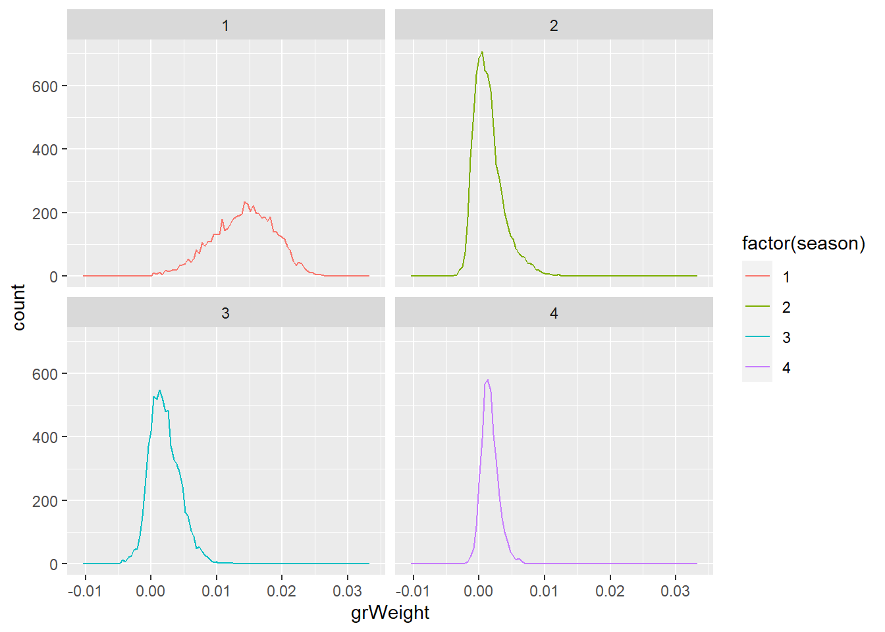
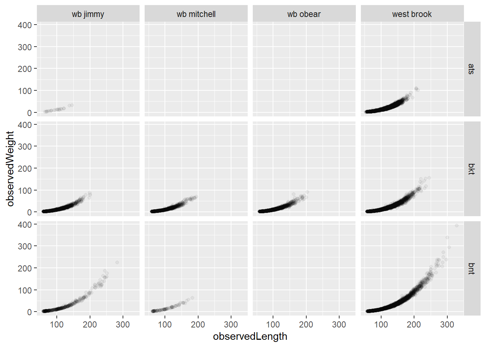
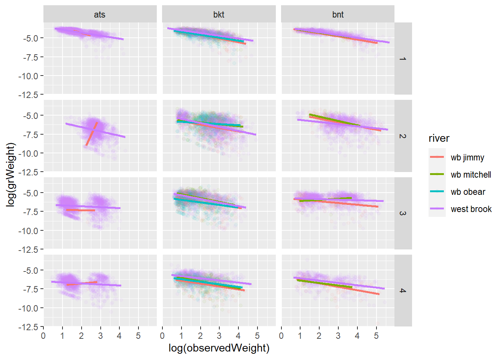
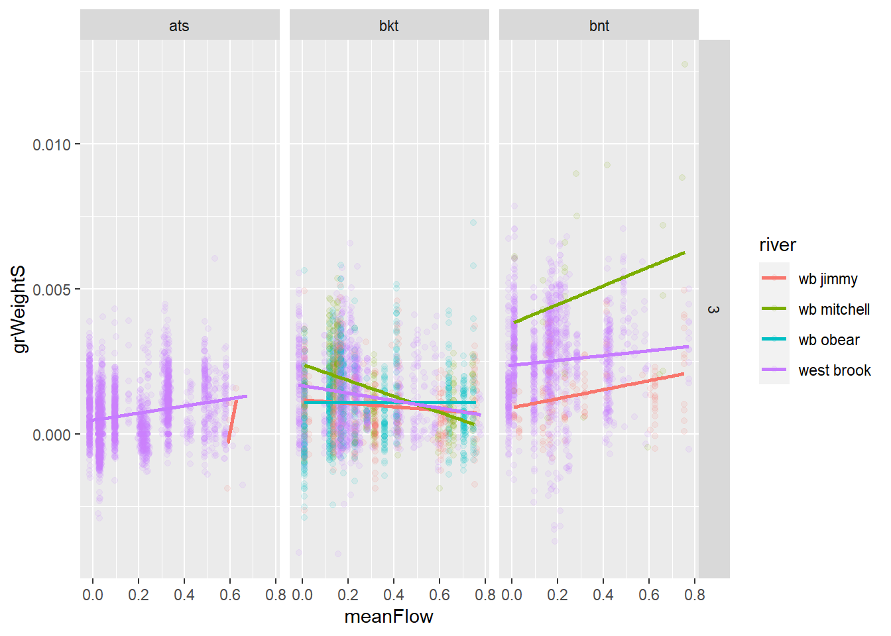
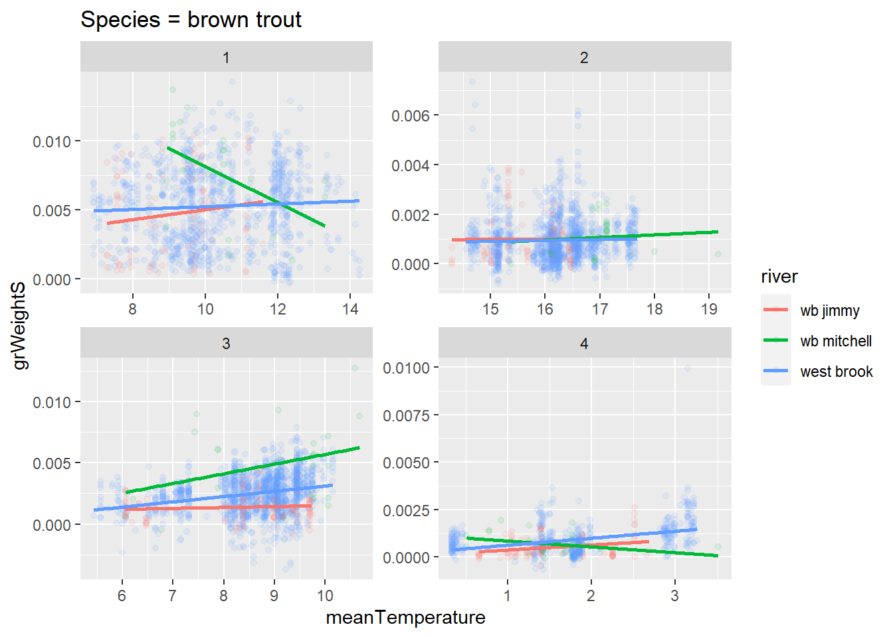
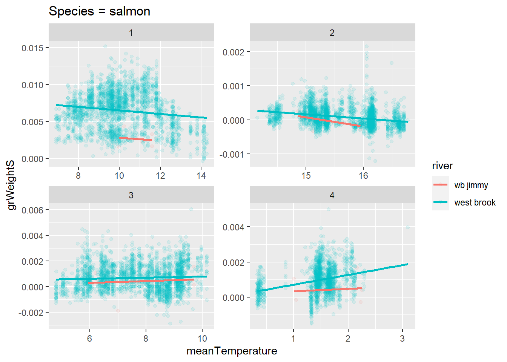

13 Growth in mass
Get electrofishing data
Code
cd <- tar_read(cdWB_electro_target)Limit to consecutive sample captures (cd1)
Code
table(as.numeric(cd$sampleNumber), as.numeric(cd$lagSampleNumber), cd$season, cd$year) |>
data.frame() |>
filter(Freq > 0) |>
arrange(Var1, Var2) |>
tail(40) Var1 Var2 Var3 Var4 Freq
38 45 46 1 2006 292
39 46 47 2 2006 387
40 47 48 3 2006 395
41 48 49 4 2006 215
42 49 50 1 2007 208
43 50 51 2 2007 260
44 51 52 3 2007 60
45 52 53 4 2007 51
46 53 54 1 2008 151
47 54 55 2 2008 238
48 55 56 3 2008 358
49 56 57 4 2008 153
50 57 58 1 2009 138
51 58 59 2 2009 227
52 59 60 3 2009 707
53 60 61 4 2009 384
54 61 62 1 2010 425
55 62 63 2 2010 373
56 63 64 3 2010 412
57 64 65 4 2010 149
58 65 66 1 2011 129
59 66 67 2 2011 100
60 67 68 3 2011 119
61 68 69 4 2011 123
62 69 70 1 2012 91
63 70 71 2 2012 231
64 71 72 3 2012 229
65 72 73 4 2012 186
66 73 74 1 2013 267
67 74 75 2 2013 350
68 75 76 3 2013 483
69 76 77 4 2013 121
70 77 78 1 2014 103
71 78 79 2 2014 278
72 79 80 3 2014 270
73 80 81 4 2014 92
74 81 82 1 2015 90
75 82 83 2 2015 389
76 83 84 3 2015 136
77 84 85 2 2016 1Code
`%notin%` <- Negate(`%in%`)
cd1 <- cd |>
filter(sampleNumberDiff == 1,
tag %notin% c('1bf20ff490', '1bf20ebe4e') )Raw length, weight data graphs
Code
ggplot(cd1, aes(grWeight, color = factor(season))) +
geom_freqpoly(bins = 100) +
facet_wrap(~season)
Code
ggplot(cd1, aes(observedLength, observedWeight)) +
geom_point(alpha = 0.05) +
facet_grid(species~river)
Get l-w relationships for growth model
We need to get separate stats for each river and season and species
Size-independent growth (grWeightS) is calculated in getDataElectro_targets.R file using addSizeIndGrowthWeight()
grWeightS uses the slope of log(observedWeight) ~ log(grWeight) for each river and season and species to adjust growth
see Sigourney, D. B., B H Letcher, M. Obedzinski, and R. A. Cunjak. “Size-Independent Growth in Fishes: Patterns, Models and Metrics.” Journal of Fish Biology 72, no. 10 (2008): 2435–55. https://doi.org/10.1111/j.1095-8649.2008.01830.x.
Code
ggplot(cd1 |> filter(grWeight > 0),
aes(log(observedWeight), log(grWeight), color = river)) +
geom_point(alpha = 0.05) +
geom_smooth(method = "lm", se = FALSE) +
facet_grid(season~species)
Code
mod0 <- lm(log(observedWeight) ~ log(grWeight), data = cd1 |> filter(grWeight > 0))
mod1 <- lm(log(observedWeight) ~ log(grWeight) * river, data = cd1 |> filter(grWeight > 0))
mod2 <- lm(log(observedWeight) ~ log(grWeight) * river * factor(season), data = cd1 |> filter(grWeight > 0))
mod3 <- lm(log(observedWeight) ~ log(grWeight) * factor(season), data = cd1 |> filter(grWeight > 0))
mod4 <- lm(log(observedWeight) ~ log(grWeight) * river * factor(season) * species, data = cd1 |> filter(grWeight > 0))
AIC(mod0,mod1,mod2,mod3,mod4) |> arrange(AIC) df AIC
mod4 73 44111.09
mod2 33 46364.61
mod3 9 47013.00
mod1 9 51437.39
mod0 3 51742.41Size-adjusted growth works quite well except in the spring.
Code
ggplot(cd1, aes(log(observedWeight), grWeightS, color = river)) +
geom_point(alpha = 0.05) +
geom_smooth(method = "lm", se = FALSE) +
facet_grid(season~species)
1bf20ff490 1bf20ebe4e have incorrect weights leading to very negative growth rates
Exclude these tags above
Code
cd1 |>
arrange(grWeightS) |>
select(tag, species, detectionDate, season, sampleNumber, lagSampleNumber, observedWeight, lagObservedWeight, grWeightS)# A tibble: 24,299 × 9
tag species detectionDate season sampl…¹ lagSa…² obser…³ lagOb…⁴
<chr> <chr> <dttm> <dbl> <dbl> <dbl> <dbl> <dbl>
1 257c67e414 bkt 2009-09-24 17:09:00 3 59 60 7.3 4.4
2 1bf0fec291 bkt 2001-09-07 16:00:00 3 27 28 2.7 1.6
3 257c67b532 bnt 2010-09-23 13:49:00 3 63 64 34 25.5
4 00088d1ad4 bnt 2010-09-22 18:06:00 3 63 64 4.5 3.6
5 257c67db60 bnt 2010-09-29 16:52:00 3 63 64 24.2 19.5
6 00088d0b59 bnt 2010-09-22 17:25:00 3 63 64 3.7 3
7 414b684955 ats 1998-09-14 16:00:00 3 15 16 5.7 4.3
8 0009f6ec56 bkt 2013-09-18 04:00:00 3 75 76 3.5 2.7
9 410a151a2d ats 1998-09-10 16:00:00 3 15 16 4.7 3.6
10 257c59b4d8 bnt 2010-09-29 16:52:00 3 63 64 18.5 15.5
# … with 24,289 more rows, 1 more variable: grWeightS <dbl>, and abbreviated
# variable names ¹sampleNumber, ²lagSampleNumber, ³observedWeight,
# ⁴lagObservedWeightLost of very fast growth mostly in the spring. No clear way to exlue fish.
Code
cd1 |>
arrange(desc(grWeightS)) |>
select(tag, species, detectionDate, season, sampleNumber, lagSampleNumber, observedWeight, lagObservedWeight, grWeightS) |>
print(n = 50)# A tibble: 24,299 × 9
tag species detectionDate season sampl…¹ lagSa…² obser…³ lagOb…⁴
<chr> <chr> <dttm> <dbl> <dbl> <dbl> <dbl> <dbl>
1 1bf1020623 bkt 2002-04-02 17:00:00 1 29 30 1.3 14.4
2 0009f6eef4 bkt 2014-04-24 16:54:00 1 77 78 2.3 10.3
3 413f4b1845 ats 1998-03-23 17:00:00 1 13 14 1.8 8.3
4 1bf16366cf bnt 2003-04-10 17:00:00 1 33 34 2 10.7
5 410a015165 ats 1998-03-31 17:00:00 1 13 14 2.1 9.3
6 00088d2d2c bkt 2013-03-27 14:12:00 1 73 74 1.8 9.2
7 410a0f0653 ats 1998-03-31 17:00:00 1 13 14 2.2 10.9
8 1bf18b7637 bkt 2003-04-16 16:02:00 1 33 34 2.5 13.2
9 1bf20e4e30 bnt 2008-03-24 04:00:00 1 53 54 2.3 12.1
10 1bf1930917 ats 2004-03-25 15:15:00 1 37 38 1.9 11.7
11 411a356c36 ats 1999-04-09 16:00:00 1 17 18 2 7.8
12 413d675356 ats 1998-03-24 17:00:00 1 13 14 2.2 10.3
13 41096c506c ats 1998-04-01 17:00:00 1 13 14 2.5 10.4
14 1bf18b7083 bkt 2003-04-16 17:19:00 1 33 34 2.3 10.7
15 41097c2230 ats 1998-03-31 17:00:00 1 13 14 2.4 11.6
16 1bf18b6cc8 ats 2003-04-18 16:00:00 1 33 34 2.7 17
17 410a043a56 ats 1998-03-31 17:00:00 1 13 14 2.6 13.2
18 4109740f1b ats 1998-03-25 17:00:00 1 13 14 2.4 11.3
19 1bf17f0114 bkt 2003-04-14 18:32:00 1 33 34 2.3 10.5
20 1bf18b8453 bkt 2003-04-16 18:27:00 1 33 34 2.3 10.1
21 1bf20ec12b bnt 2005-04-15 16:30:00 1 41 42 2.2 9.8
22 0009f6ebdd bkt 2014-04-24 17:18:00 1 77 78 3.2 12.1
23 00088d2f4b bkt 2013-03-26 04:00:00 1 73 74 3.1 19.2
24 0009f6f976 bnt 2011-09-20 04:00:00 3 67 68 40.4 67
25 1bf188ac80 ats 2003-04-11 16:00:00 1 33 34 2.2 10.8
26 1bf188a0f2 ats 2003-04-18 16:00:00 1 33 34 2.5 13.2
27 0009f6edc1 bkt 2014-04-24 12:11:00 1 77 78 3.8 13.1
28 1bf20ec023 bnt 2007-04-10 14:49:00 1 49 50 2.9 12
29 1bf20e4e12 bkt 2008-04-09 13:27:00 1 53 54 3.1 11.8
30 413d261279 ats 1998-03-17 17:00:00 1 13 14 2.4 10.9
31 1bf1d6189f ats 2004-03-24 16:09:00 1 37 38 1.8 9
32 1bf18b82fc bkt 2003-04-16 13:10:00 1 33 34 2.4 10
33 1bf1da0cb8 ats 2004-03-30 18:13:00 1 37 38 2.4 13.1
34 1bf1c151d2 ats 2004-04-08 15:37:00 1 37 38 2.1 9.5
35 1bf1633327 bkt 2003-04-11 16:00:00 1 33 34 2.1 8.7
36 00088d2eed bkt 2013-03-27 18:34:00 1 73 74 2 8.7
37 1bf18b7331 ats 2003-04-18 16:00:00 1 33 34 2.7 14.5
38 1bf1ff658b bkt 2005-04-22 13:37:00 1 41 42 2 7.8
39 1bf18b74c5 bkt 2003-04-16 18:27:00 1 33 34 3.4 20.5
40 1bf20ec06c bnt 2008-03-24 04:00:00 1 53 54 2.4 12.9
41 4109774e32 ats 1998-03-27 17:00:00 1 13 14 2.6 11.4
42 00088d0a8b bkt 2011-03-29 04:00:00 1 65 66 2.8 14.4
43 1bf18b73af ats 2003-04-02 20:40:00 1 33 34 2.3 11.6
44 1bf20eaf1e bnt 2005-04-19 15:06:00 1 41 42 2.2 8.6
45 00088d196c bnt 2011-03-30 15:38:00 1 65 66 2.7 14.3
46 1bf188ab92 ats 2003-04-16 14:05:00 1 33 34 2.4 10.7
47 1bf18b8113 ats 2003-04-16 14:05:00 1 33 34 2.3 9.8
48 1bf188aaa0 ats 2003-04-15 13:35:00 1 33 34 2.7 13.1
49 1bf18879d8 bkt 2003-04-18 16:00:00 1 33 34 2.2 8.7
50 1bf16350ad bkt 2003-04-11 16:00:00 1 33 34 2.6 12
# … with 24,249 more rows, 1 more variable: grWeightS <dbl>, and abbreviated
# variable names ¹sampleNumber, ²lagSampleNumber, ³observedWeight,
# ⁴lagObservedWeightMean flow effect on size-independent growth?
Maybe in Jimmy for bnt, or for ats
Code
ggplot(cd1, aes(meanFlow, grWeightS, color = river)) +
geom_point(alpha = 0.05) +
geom_smooth(method = "lm", se = FALSE) +
facet_grid(season~species)
Code
ggplot(cd1 |> filter(season == 3), aes(meanFlow, grWeightS, color = river)) +
geom_point(alpha = 0.1) +
geom_smooth(method = "lm", se = FALSE) +
facet_grid(season~species)
Mean temperature effect on size-independent growth?
Maybe in Jimmy for bnt, or for ats
Code
ggplot(cd1, aes(meanTemperature, grWeightS, color = river)) +
geom_point(alpha = 0.05) +
geom_smooth(method = "lm", se = FALSE) +
facet_grid(season~species)
Code
ggplot(cd1 |> filter(species == 'bkt'), aes(meanTemperature, grWeightS, color = river)) +
geom_point(alpha = 0.1) +
geom_smooth(method = "lm", se = FALSE) +
ggtitle('Species = brook trout') +
facet_wrap(~season, scales = 'free')
Code
ggplot(cd1 |> filter(species == 'bnt'), aes(meanTemperature, grWeightS, color = river)) +
geom_point(alpha = 0.1) +
geom_smooth(method = "lm", se = FALSE) +
ggtitle('Species = brown trout') +
facet_wrap(~season, scales = 'free')
Code
ggplot(cd1 |> filter(species == 'ats'), aes(meanTemperature, grWeightS, color = river)) +
geom_point(alpha = 0.1) +
geom_smooth(method = "lm", se = FALSE) +
ggtitle('Species = salmon') +
facet_wrap(~season, scales = 'free')
Growth rate in length vs size-independent growth rate in mass
Code
ggplot(cd1, aes(grLength, grWeightS)) +
geom_point(aes(size = observedWeight), alpha = 0.2) +
facet_grid(season~species)
Growth rate in length vs ‘instantaneous’ growth rate in mass
Code
ggplot(cd1, aes(grLength, grWeight)) +
geom_point(aes(size = observedWeight), alpha = 0.2) +
facet_grid(season~species)